Dichiarazione di Porto Base
Il portale delle Smart Guide è uno spazio digitale che raccoglie risorse pratiche e aggiornate in un unico ambiente intuitivo. Strumenti chiari e organizzati per organizzarti e trovare subito ciò che ti serve.
01.
Ricerca e Consultazione
Gestione Dichiarazione di Porto Base
La dashboard
Visualizzazione delle Dichiarazioni di Porto Base
Panoramica delle attività
Dalla dashboard è possibile consultare l'elenco di tutte le Dichiarazioni di Porto Base che richiedono azioni di valutazione.
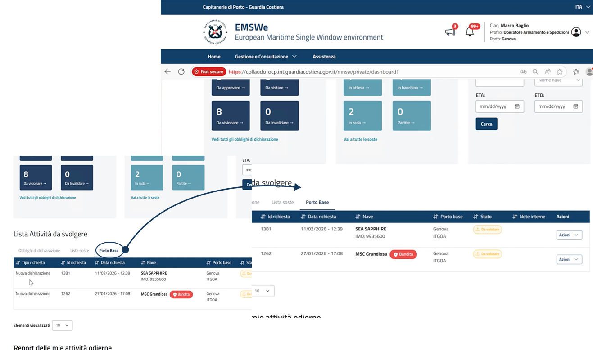
Punto di accesso
La voce di menù
Dalla dashboard, oltre a visualizzare, ricercare le soste, consultare la lista delle attività da svolgere, è possibile accedere alle principali sezioni tramite le voci di menu.
Menu a tendina
Cliccando sulla voce "Gestione e Consultazione" viene visualizzato un menu a tendina, da cui è possibile accedere alle "Dichiarazioni di Porto Base".
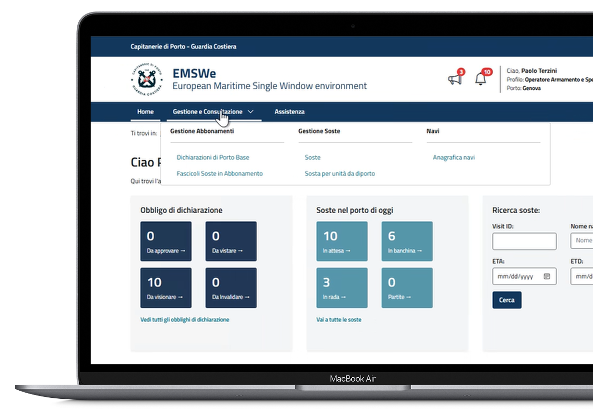
Ricerca tra Dichiarazione di Porto Base e Richieste di invalidazione
In questa pagina è possibile visualizzare ed esportare l'elenco delle dichiarazioni di porto base attive, lo storico delle richieste precedenti e le richieste di invalidazione e chiusura.
Dichiarazione di Porto Base
L'operatore CdP valuta formalmente il porto in cui una nave è stabilmente basata, dopo aver ricevuto la richiesta da parte dell'Armatore.
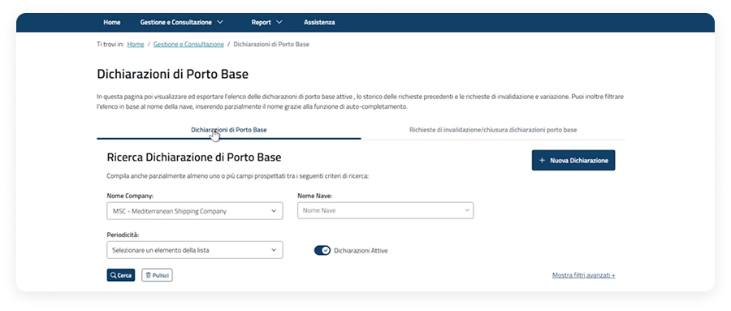
Richiesta di invalidazione/chiusura Dichiarazione di Porto Base
È la procedura che consente all'operatore CdP di ricercare le richieste di invalidazione/chiusura di una Dichiarazione di Porto Base "Approvata".
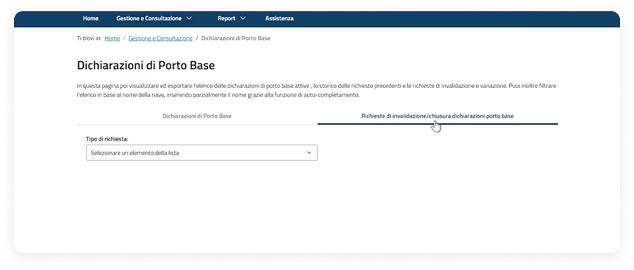
Dichiarazione di porto base
Ricerca Dichiarazione di Porto Base
La pagina consente all'Operatore di Capitaneria di ricercare e consultare le Dichiarazioni di Porto Base presenti nel sistema.
La ricerca può essere effettuata utilizzando i campi e i filtri disponibili, per individuare rapidamente le dichiarazioni di interesse, sia attive sia storiche, ai fini delle attività di verifica e controllo.
Consente di filtrare le Dichiarazioni di Porto Base attive e passate; la ricerca è già impostata per visualizzare solo le dichiarazioni di porto base attive.
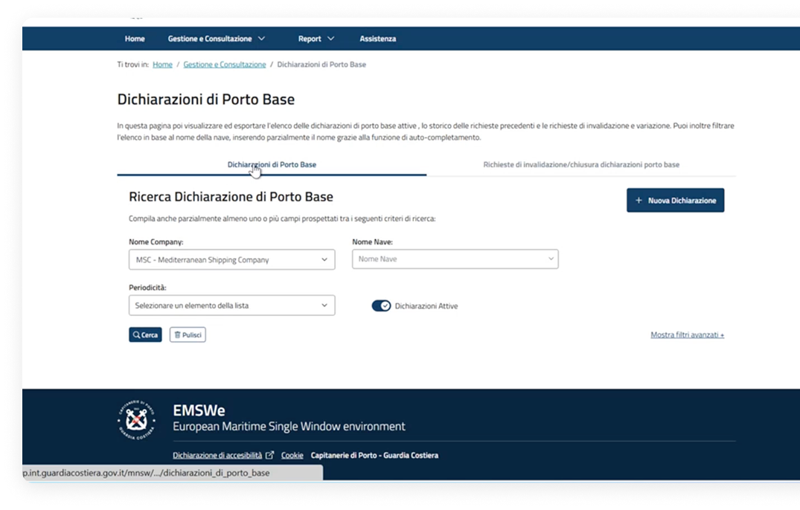
Dichiarazione di Porto Base
Funzionalità in pagina
È possibile avviare la ricerca utilizzando i filtri disponibili oppure applicare criteri aggiuntivi per affinare i risultati.
La schermata è suddivisa nelle seguenti sezioni:
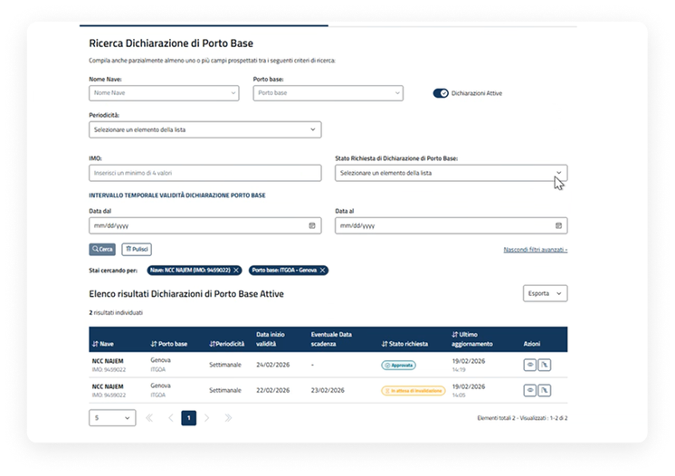
Sezione filtri
La sezione Filtri consente di ricercare le Dichiarazioni secondo diversi criteri, con visibilità su tutte le compagnie e le navi presenti nel sistema. Sono disponibili filtri base, come nome della compagnia e della nave, "Dichiarazioni Attive", e filtri avanzati per affinare la ricerca per intervallo temporale e stato della richiesta.
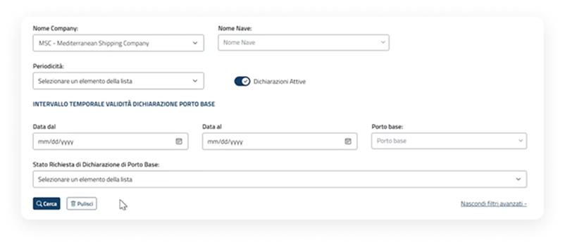
Visualizzazione richiesta tramite tabella
I risultati della ricerca vengono presentati in una tabella, mostrando le informazioni principali e le azioni disponibili.
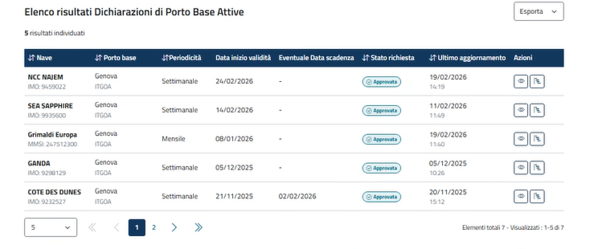
Le dichiarazioni in stato "Ritirata" è visibile esclusivamente agli Operatori CdP che operano per il porto presente nella Dichiarazione "Ritirata".
Dichiarazione di porto base
Visualizzazione dettaglio Dichiarazione di Porto Base
All'interno della pagina sono consultabili le seguenti informazioni:
- Dati della Dichiarazione di Porto Base
- Note
- Documenti caricati
- Utenti dichiaranti
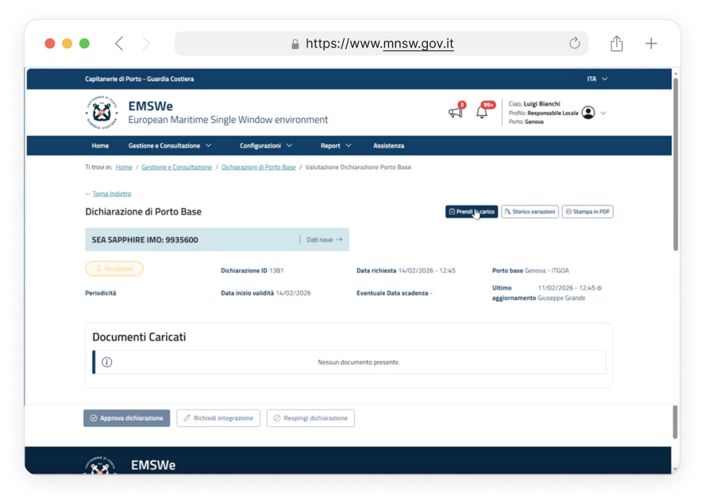
Possibili azioni sulla Dichiarazione di Porto Base:
La funzione "Presa in carico" consente di accedere alle seguenti azioni operative sulla dichiarazione:
- Approva Dichiarazione — Conferma e valida la dichiarazione inserita.
- Richiedi integrazione — Invia una richiesta di integrazione o modifica al soggetto dichiarante.
- Respingi Dichiarazione — Rifiuta la dichiarazione, indicando le motivazioni del respingimento.
Consente di consultare tutte le modifiche apportate alla dichiarazione nel tempo, con evidenza delle variazioni e dei relativi aggiornamenti.
Permette di generare ed esportare il documento in formato PDF per la consultazione offline o l'archiviazione.
Richiesta di invalidazione/chiusura Dichiarazione di Porto Base
Ricerca della richiesta di invalidazione
La pagina consente di ricercare e consultare le richieste di invalidazione/chiusura di Porto Base presenti nel sistema.
È necessario selezionare il tipo di richiesta, in questo caso "Richiesta di invalidazione", per visualizzare i filtri di ricerca.
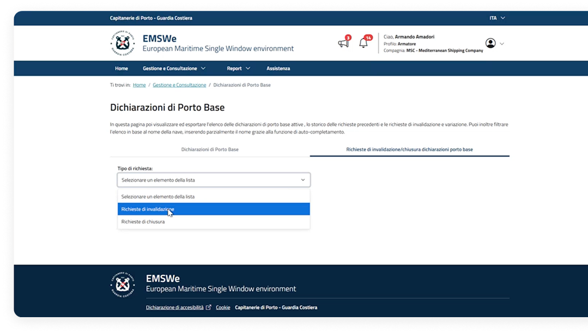
Richiesta di invalidazione/chiusura Dichiarazione di porto base
Funzionalità in pagina
Una volta selezionato il tipo di richiesta, è possibile avviare subito la ricerca oppure aggiungere ulteriori filtri avanzati per rendere i risultati più precisi. La schermata è suddivisa nelle seguenti sezioni:
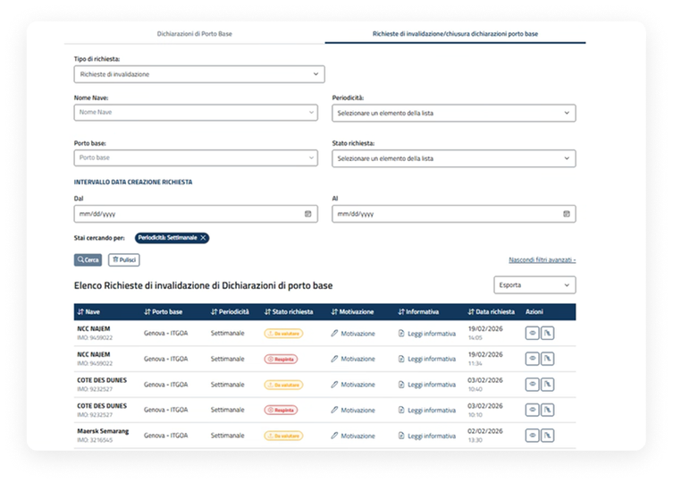
Sezione filtri
La sezione Filtri consente di ricercare le richieste di invalidazione/chiusura secondo diversi criteri. Sono disponibili filtri base, come nome della nave e periodicità, e filtri avanzati per affinare la ricerca per porto base, stato della richiesta e periodo.
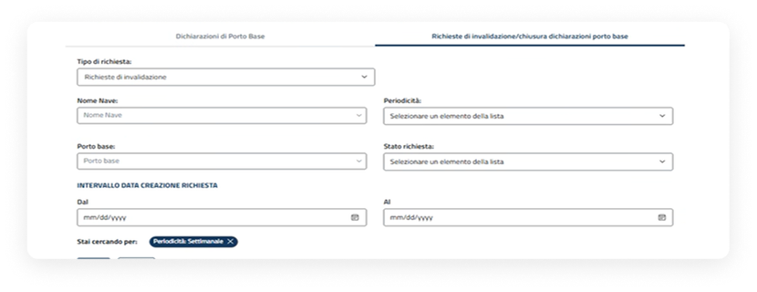
Visualizzazione richiesta tramite tabella
I risultati della ricerca vengono presentati in una tabella, mostrando le informazioni principali.
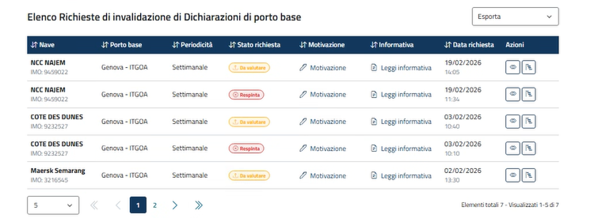
Richiesta di invalidazione/chiusura Dichiarazione di porto base
Focus Elenco richieste
Informazioni principali
All'interno della tabella sono visualizzati dati come nome della nave, porto base, periodicità e stato della richiesta.
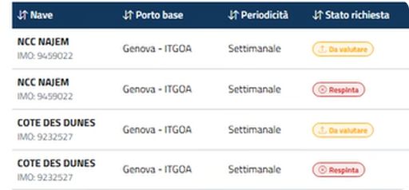
Motivazione e informativa
Con l'hover del mouse è possibile consultare la motivazione della richiesta e la normativa di riferimento.
Azioni sulla richiesta
Per ogni richiesta sono disponibili le azioni di visualizzazione del dettaglio e consultazione dello storico.
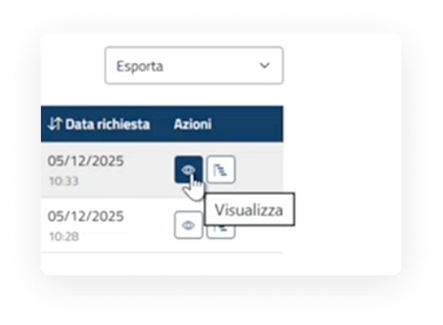
Richiesta di invalidazione/chiusura Dichiarazione di porto base
Visualizzazione dettaglio richiesta
All'interno della pagina sono consultabili le seguenti informazioni:
- Dati della richiesta
- Informativa
- Motivazione delle richiesta di invalidazione
Azione primaria da fare:
Viene presa in carico l'attività da svolgere.
Possibilità di stampare un PDF del dettaglio.
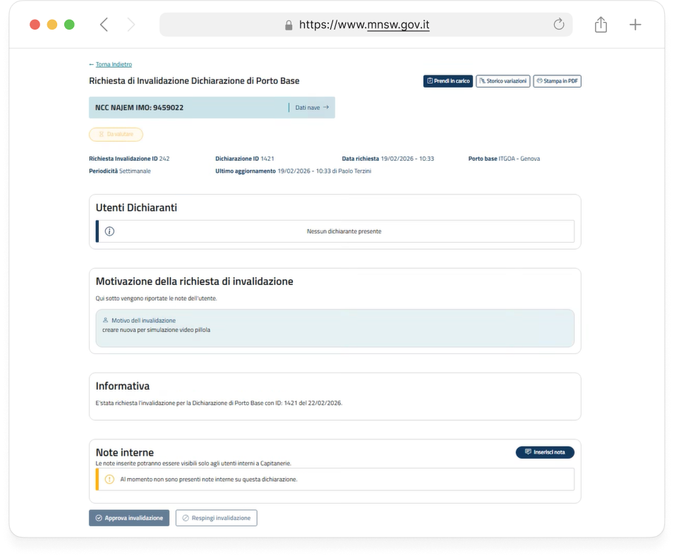
02.
Valutazione della Dichiarazione di Porto Base
Di seguito una panoramica sulle azioni disponibili per la valutazione di una Dichiarazione di Porto Base, che può avvenire esclusivamente dopo la sottomissione della stessa.
Valutazione della Dichiarazione di Porto Base
Azioni disponibili post "Presa in carico"
Una volta che l'utente ha preso in carico una Dichiarazione di Porto base, avrà la possibilità di procedere con le seguenti azioni:
Visualizza il dettaglio del flusso di "presa in carico" nella sezione "Ricerca e Consultazione".
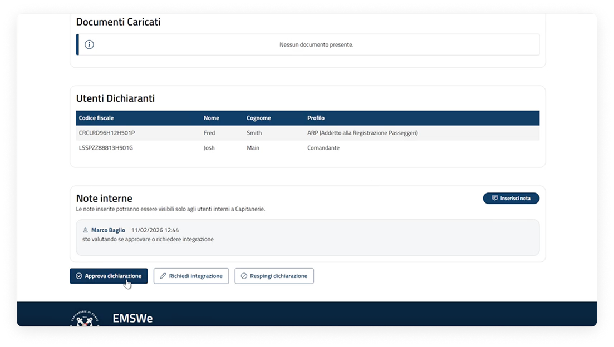
L'utente, dopo aver preso visione della Dichiarazione di Porto Base, può decidere di approvarla.
L'utente, dopo aver preso visione della Dichiarazione di Porto Base, può decidere se richiedere all'Armatore di integrarla.
L'utente, dopo aver preso visione della Dichiarazione di Porto Base, può decidere di respingerla.
Gestione azioni sull'attività
Passaggi per approvare una Dichiarazione
Il flusso per approvare la Dichiarazione di Porto Base da parte dell'Operatore di Capitanerie, prevede i seguenti passaggi:
Avvia azione "Approva dichiarazione"
Per approvare la Dichiarazione di Porto Base clicchiamo, "Approva dichiarazione".
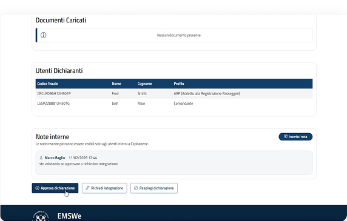
Conferma approvazione dichiarazione
Il sistema mostra una finestra per confermare l'approvazione della dichiarazione; clicca l'apposito pulsante per proseguire.
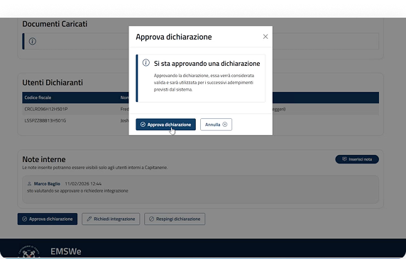
Dettaglio e stato
Una volta cliccato il pulsante, la Dichiarazione passa nello stato "Approvata".
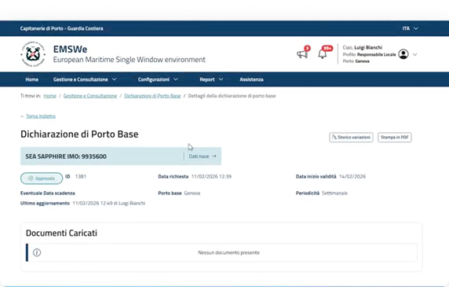
Gestione azioni sull'attività
Passaggi per richiedere un'integrazione
Il flusso per richiedere l'integrazione della Dichiarazione di Porto Base da parte dell'Operatore di Capitanerie, prevede i seguenti passaggi:
Avvia azione "Richiedi integrazione"
Per richiedere l'integrazione della Dichiarazione di Porto Base clicchiamo "Richiedi integrazione".
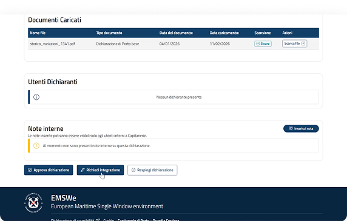
Aggiunta della motivazione di integrazione
Il sistema mostrerà una finestra per inserire obbligatoriamente la motivazione della richiesta di integrazione; compilare e confermare.
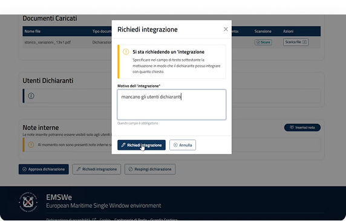
Dettaglio e stato
Una volta confermata la richiesta, nel dettaglio la dichiarazione passa allo stato "Da integrare".
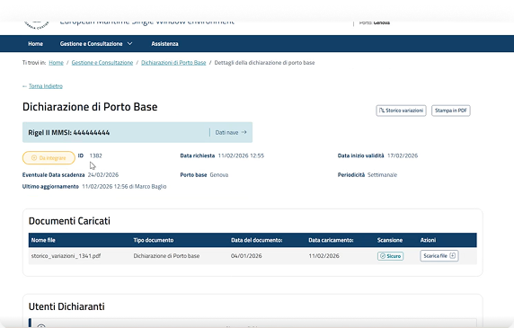
Gestione azioni sull'attività
Passaggi per respingere una Dichiarazione
Il flusso per respingere la Dichiarazione di Porto Base da parte dell'Operatore di Capitanerie, prevede i seguenti passaggi:
Avvia azione "Respingi dichiarazione"
Per respingere la Dichiarazione di Porto Base clicchiamo, "Respingi dichiarazione".
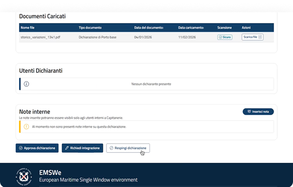
Finestra di conferma
Il sistema mostra una finestra per inserire obbligatoriamente il motivo per la quale si sta respingendo la Dichiarazione; compilare e confermare.
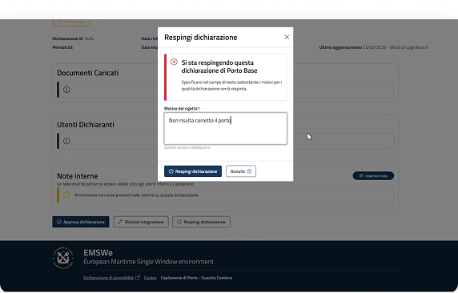
Dettaglio e stato
Una volta cliccato il pulsante, la Dichiarazione passa nello stato "Respinta".
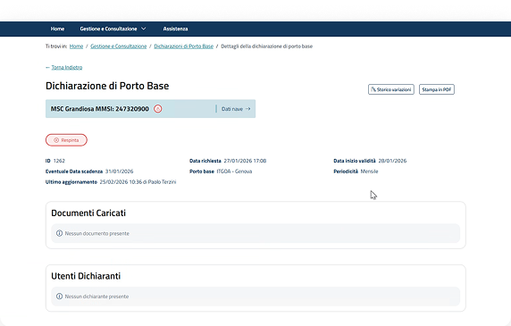
03.
Valutazione richiesta di invalidazione
Di seguito una panoramica sulle azioni disponibili per la valutazione di una richiesta di invalidazione di una Dichiarazione di Porto Base, che può avvenire esclusivamente dopo la sottomissione della stessa.
Valutazione richiesta di invalidazione
Passaggi per approvare la richiesta di invalidazione
A seguito dell'invio della richiesta di invalidazione della Dichiarazione di Porto Base da parte dell'Armatore, l'Operatore di Capitanerie potrà valutarla, decidendo se approvarla o respingerla.
Dettaglio e pulsante
Per approvare la Dichiarazione di Porto Base clicchiamo, "Approva invalidazione".
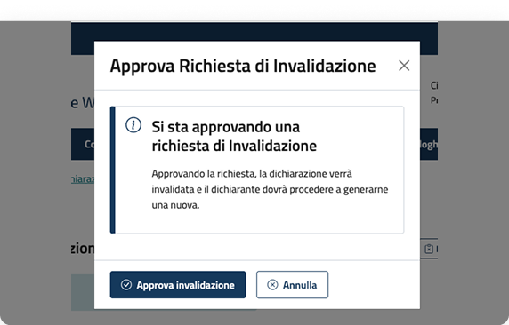
Aggiunta della motivazione del rifiuto
Il sistema mostra una finestra per inserire obbligatoriamente la motivazione di rifiuto della richiesta; compila il campo e conferma.
Dettaglio e stato
Al clic del pulsante, lo stato della richiesta diventa "Accettata" e la Dichiarazione di Porto Base "Invalidata".
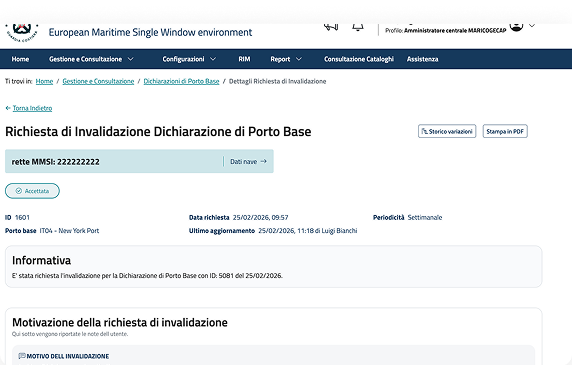
Valutazione richiesta di invalidazione
Passaggi per rifiutare la richiesta di invalidazione
A seguito dell'invio della richiesta di invalidazione della Dichiarazione di Porto Base da parte dell'Armatore, l'Operatore di Capitanerie potrà valutarla, decidendo se approvarla o respingerla.
Dettaglio e pulsante
Per approvare la Dichiarazione di Porto Base clicchiamo, "Respingi invalidazione".
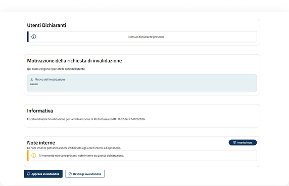
Aggiunta della motivazione del rifiuto
Il sistema mostra una finestra per inserire obbligatoriamente la motivazione di rifiuto della richiesta; compila il campo e conferma.
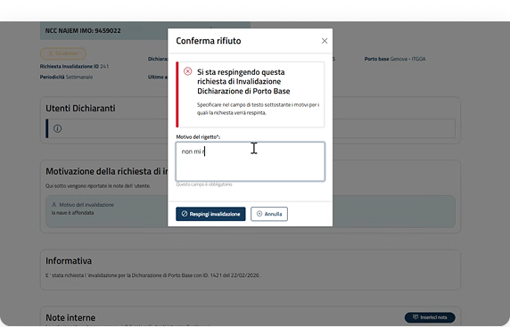
Dettaglio e stato
Una volta cliccato il pulsante, la richiesta di invalidazione passa nello stato "Respinta" e contestualmente la Dichiarazione di Porto Base torna nello stato "Approvata".
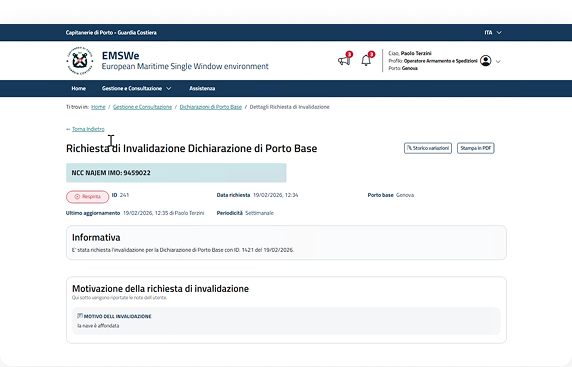
04.
Valutazione richiesta di chiusura
Di seguito una panoramica sulle azioni disponibili per la valutazione di una richiesta di chiusura di una Dichiarazione di Porto Base, che può avvenire esclusivamente dopo la sottomissione della stessa.
Valutazione richiesta di invalidazione
Passaggi per approvare la richiesta di chiusura
A seguito dell'invio della richiesta di chiusura della Dichiarazione di Porto Base da parte dell'Armatore, l'Operatore di Capitaneria potrà valutarla, decidendo se approvarla o respingerla.
Dettaglio e pulsante
Per approvare la richiesta di chiusura della Dichiarazione di Porto Base clicchiamo, "Approva richiesta di chiusura".

Finestra di conferma
Il sistema mostrerà una finestra per conferma la richiesta di chiusura; clicca l'apposito pulsante per confermare.
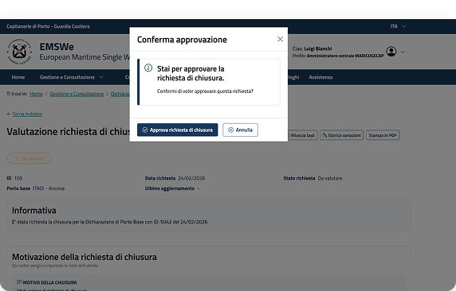
Dettaglio e stato
Una volta cliccato il pulsante, la richiesta di chiusura passa nello stato "Accettata".
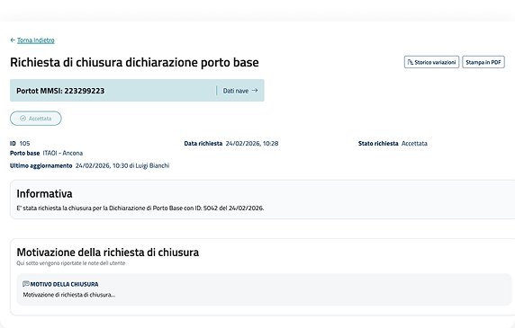
Valutazione richiesta di invalidazione
Effetti a seguito di approvazione richiesta di chiusura
A seguito di approvazione richiesta chiusura della Dichiarazione di Porto Base, sia la Dichiarazione di Porto base che il Fascicolo per soste in abbonamento ad essa associato assumeranno lo stato "Chiusa".
Visualizzazione e stato della Dichiarazione di Porto Base
A seguito di approvazione richiesta chiusura, la Dichiarazione di Porto Base assumerà lo stato "Chiusa".
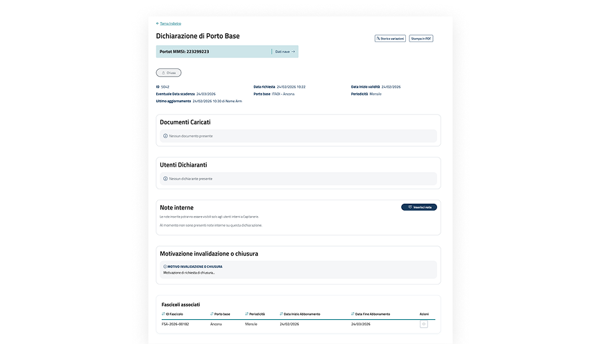
Visualizzazione e stato del Fascicolo Soste in Abbonamento
A seguito di approvazione richiesta chiusura, il Fascicolo Soste in Abbonamento assumerà lo stato "Chiuso".
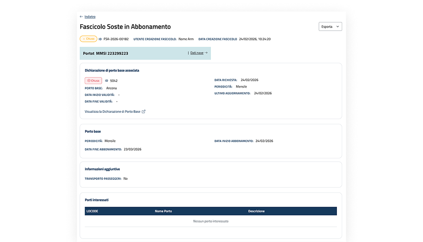
Valutazione richiesta di invalidazione
Passaggi per rifiutare la richiesta di chiusura
A seguito dell'invio della richiesta di chiusura della Dichiarazione di Porto Base da parte dell'Armatore, l'Operatore di Capitanerie potrà valutarla, decidendo se approvarla o respingerla.
Dettaglio e pulsante
Per respingere la richiesta di chiusura della Dichiarazione di Porto Base clicchiamo "Respingi richiesta di chiusura".
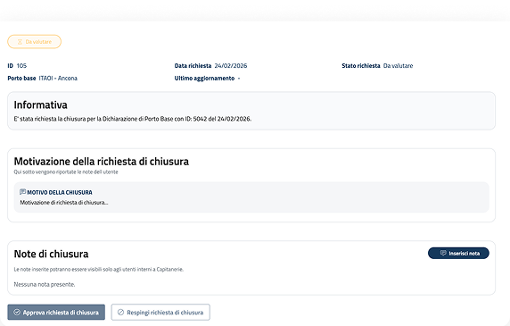
Aggiunta della motivazione del rifiuto
Il sistema mostrerà una finestra per inserire obbligatoriamente la motivazione della richiesta di chiusura; clicca il pulsante per proseguire.
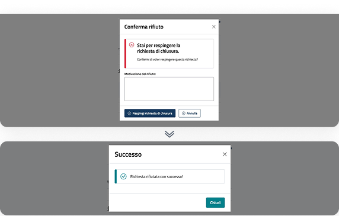
Dettaglio e stato
Una volta confermato il rifiuto della richiesta di chiusura, nel dettaglio la Dichiarazione passerà allo stato "Respinta".
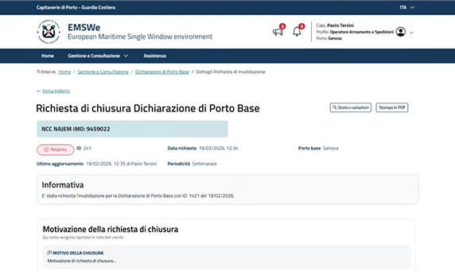
05.
Revoca Dichiarazione
Di seguito una panoramica sulla revoca della Dichiarazione di Porto Base, che può avvenire esclusivamente dopo l'approvazione della stessa.
Revoca Dichiarazione
Passaggi per revocare la dichiarazione
Una volta approvata la Dichiarazione di Porto Base, l'Operatore di Capitaneria può procedere con la revoca della stessa attraverso i seguenti passaggi:
Dettaglio e pulsante
Per revocare la Dichiarazione di Porto Base clicchiamo "Revoca Dichiarazione".
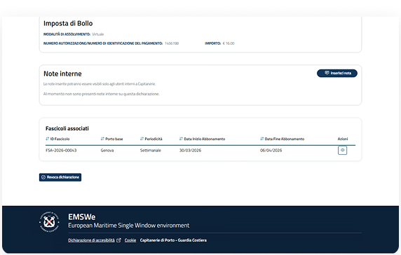
Aggiunta della motivazione della revoca
Il sistema mostra una finestra per inserire obbligatoriamente il motivo per cui si sta revocando la Dichiarazione; compilare e confermare.
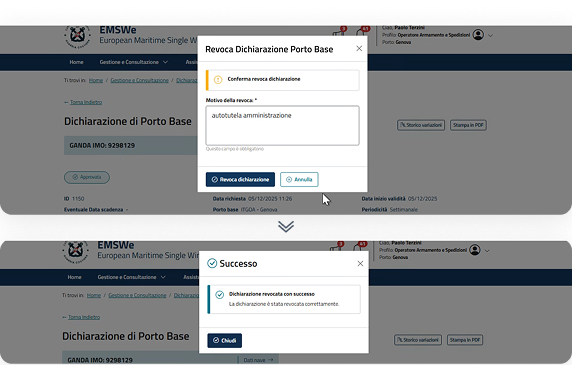
Dettaglio e stato
Dopo aver revocato la Dichiarazione di Porto Base, nel dettaglio la Dichiarazione di Porto Base assumerà lo stato "Revocata".
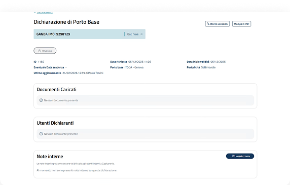